We assume that a cluster is already set up as in the tutorial for Pregel+ deployment. Alternatively, you may set up a single-node cluster in pseudo-distributed mode, as we will run Pregel+ programs in Eclipse on the local machine anyway. The Eclipse IDE is only used for programming, testing and debugging over a small data.
Download Eclipse IDE for Parallel Application Developers (Indigo) and extract it to a location of your choice. Since Eclipse does not support MPICH3 and therefore we use Open MPI instead. Download and extract the Open MPI package, and install it under /usr/local as follows:
cd openmpi-1.6.5
./configure --prefix=/usr/local
make
sudo make install [Ubuntu] / su -c "make install" [Fedora]
[type your root password]
After Open MPI is installed, add the following line to the end of the file $HOME/.bashrc, and compile it using command source $HOME/.bashrc.
export LD_LIBRARY_PATH=$LD_LIBRARY_PATH:/usr/local/lib
Start Eclipse and choose a workspace of your choice.
Choose [File]−>[New]−>[C++ Project].
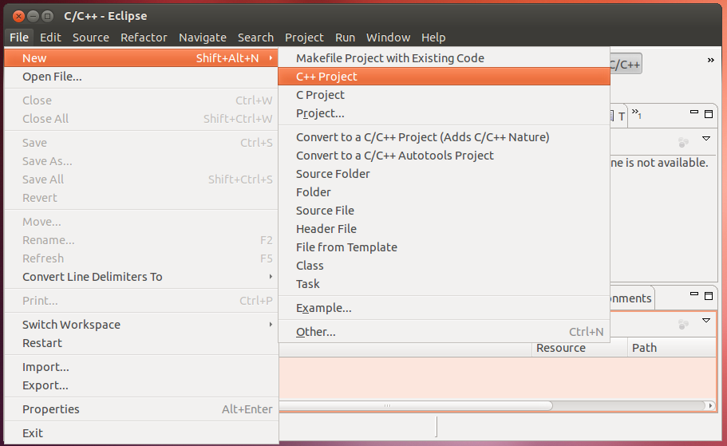
Input a project name of your choice, choose MPI Pi C++ Project and click [Finish].
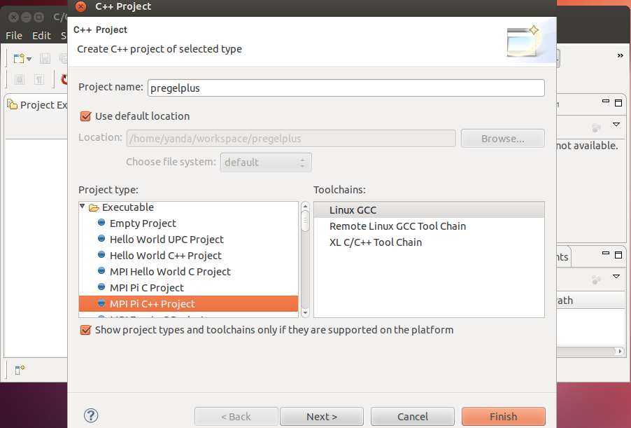
Choose [Project]−>[Build Project] to compile the demo program for computing Pi.
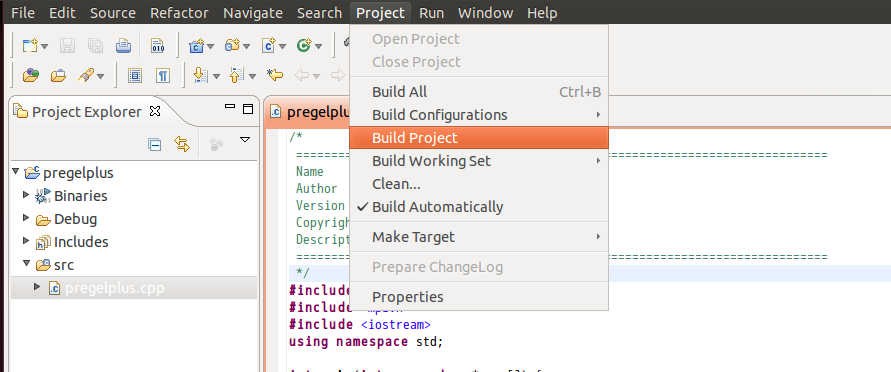
To run the demo program, we need to create and start a resource manager. Switch to the Parallel Runtime perspective.
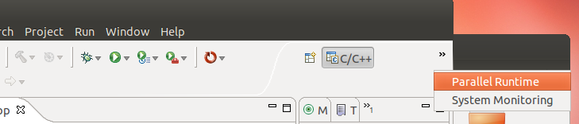
Add a resource manager, choose Open MPI in the prompted panel and click [Next]. Click [Finish] directly in the next panel prompted.
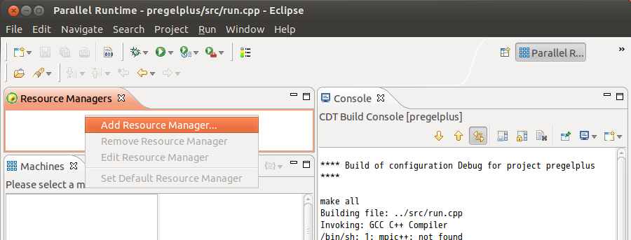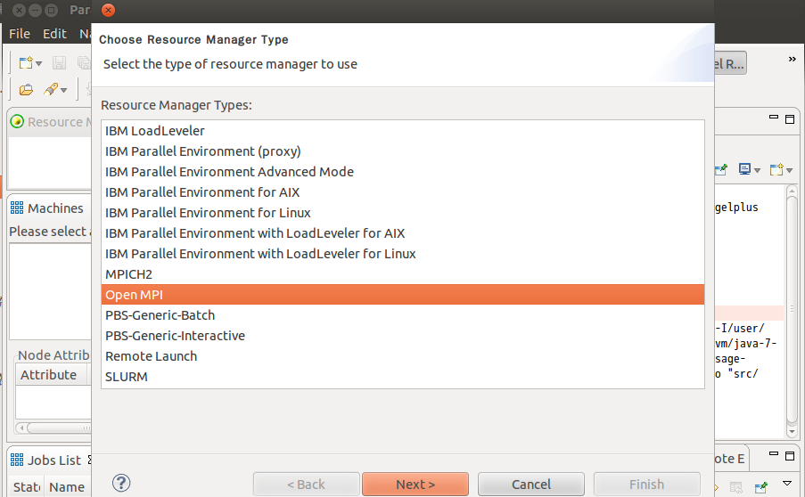
Start the resource manager.
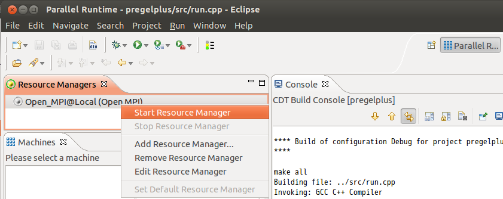
If the following error is reported, add localhost to /usr/local/etc/openmpi-default-hostfile and then stop and restart the resource manager.
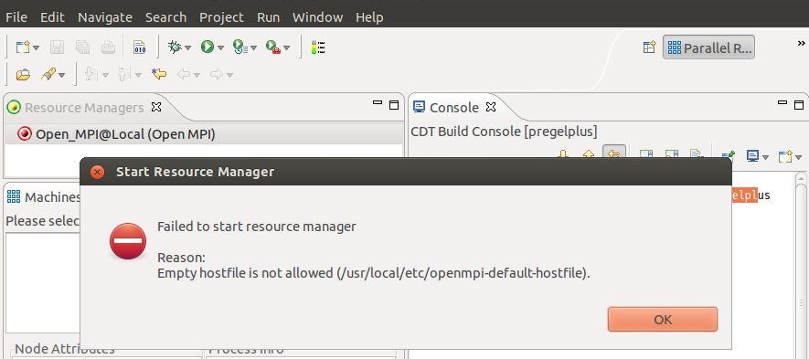
Switch back to the C/C++ perspective, and click [Run Configurations]
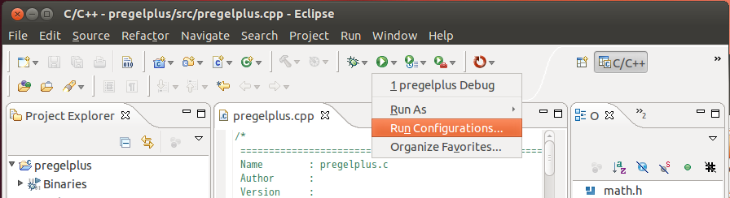
Create a new Parallel Application (not C/C++ Application), and in the Resources panel, set Number of processes as 4 to run four processes in the local machine in parallel.
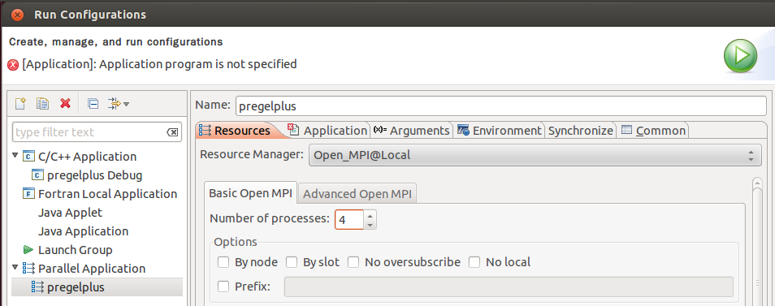
In the Application panel, set Application program as the object file under the Debug folder just compiled. Then, click [Run] to run the program.
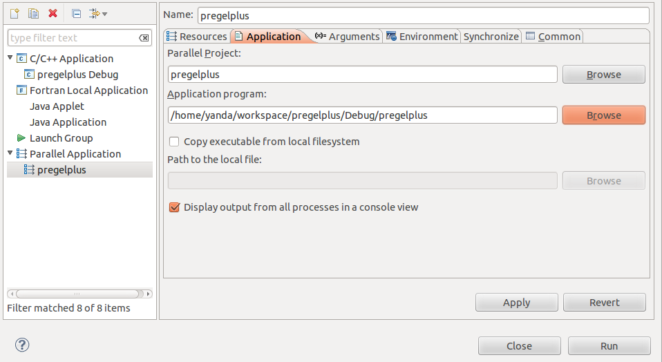
We now show how to run the Hash-Min algorithm for computing connected components in the Eclipse projected created above. See Section 3.2 of our technical report for the algorithm.
Download the system code (four directories) and the application code of Hash-Min (two files), delete the demo code under folder src in Eclipse and copy the downloaded files to src.
Now, let us take a look at run.cpp. It runs Hash-Min over the data under HDFS path /toyFolder, and the results are written under HDFS path /toyOutput.
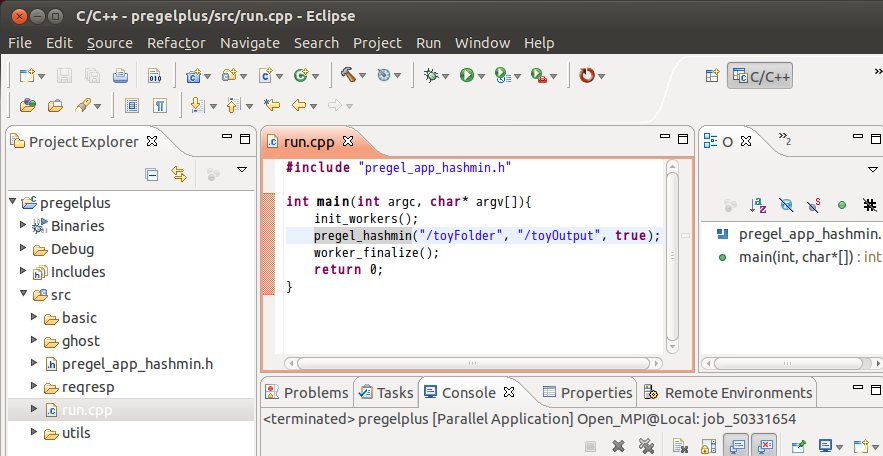
To run the program, we need to put a graph data under HDFS path /toyFolder. Download the toy graph described on the download page and put it onto HDFS as follows:
hadoop fs -mkdir /toyFolder
hadoop fs -put toy.txt /toyFolder
(For large data, we need to use Pregel+'s put program instead)
Next, we show how to configure the project to use libhdfs.
Choose [Project]−>[Properties].
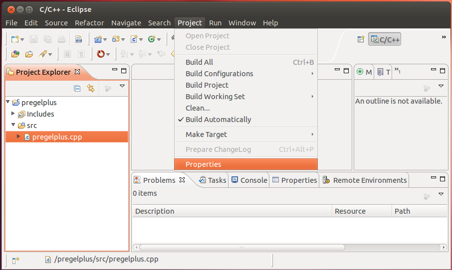
Choose [C/C++ Build]−>[Settings], then choose [GCC C++ Compiler]−>[Includes], and add the following three paths to Include paths (-l).
$HADOOP_HOME/src/c++/libhdfs
$JAVA_HOME/include
$JAVA_HOME/include/linux
(Use your absolute paths of $HADOOP_HOME and $JAVA_HOME instead of themselves)
Choose [GCC C++ Linker]−>[Libraries], and add the following path to Library serch path (-L).
[For 64-bit Linux] $HADOOP_HOME/c++/Linux-amd64-64/lib
[For 32-bit Linux] $HADOOP_HOME/c++/Linux-i386-32/lib
(Use your absolute path of $HADOOP_HOME instead of $HADOOP_HOME)
Choose [GCC C++ Linker]−>[Miscellaneous], and add the following path to Other objects.
[For 64-bit Linux]$HADOOP_HOME/c++/Linux-amd64-64/lib/libhdfs.a
$JAVA_HOME/jre/lib/amd64/server/libjvm.so
(Use your absolute paths of $HADOOP_HOME and $JAVA_HOME instead of themselves)
$HADOOP_HOME/c++/Linux-i386-32/lib/libhdfs.a
$JAVA_HOME/jre/lib/i386/server/libjvm.so
(Use your absolute paths of $HADOOP_HOME and $JAVA_HOME instead of themselves)
Choose [Project]−>[Build Project] to build the program. We remark that Eclipse might report many errors mistakenly in the Problem panel due to its imperfect design, and they can be safely ignored. Only pay attention to those errors reported in the Console panel (if any) when building the program.
Choose [Run]−>[Run Configurations]. In the Environment panel of the previously created Parallel Application, click [New] to create a new environment CLASSPATH, and set its value to be that obtained from command echo $CLASSPATH. Finally, click [run] to run the program.
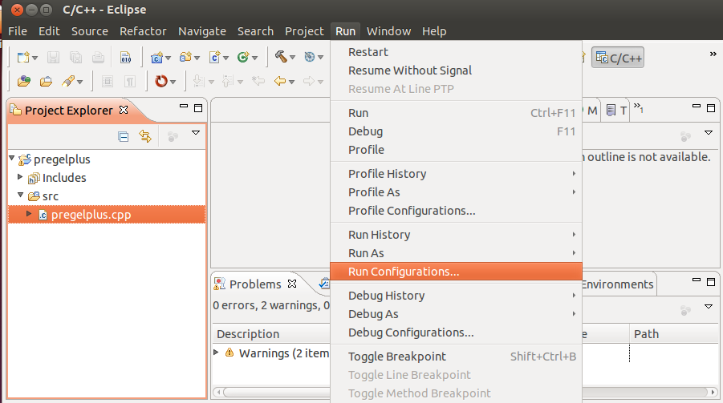
Sometimes, automatic HDFS binding may fail and the program will report Input path "/toyFolder" does not exist! In this case, you need to edit the system program file utils/ydhdfs.h to hardwire the connection. Change hdfsConnect("default", 0) of function getHdfsFS() to hdfsConnect({your_NameNode_IP}, {your_NameNode_port}) as configured in $HADOOP_HOME/conf/core-site.xml.
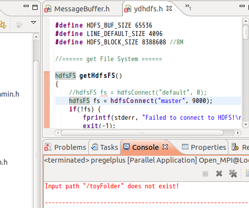
Once the configuration is done, one may simply click the button below later on to recompile and rerun the project after any code update.
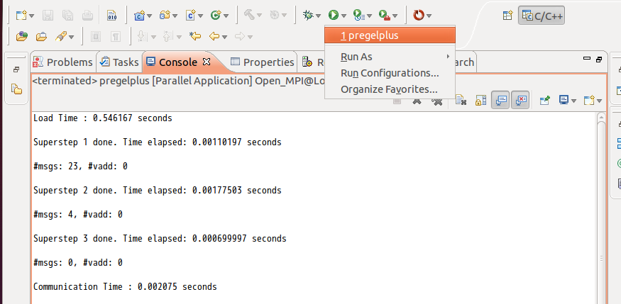